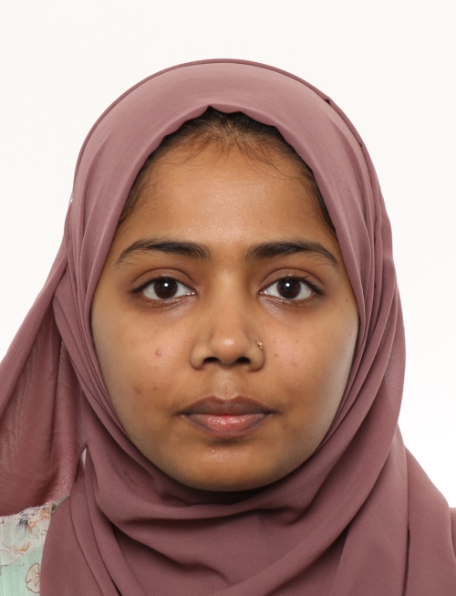

Somaya Binta Alam

+358465449448
somayabintaalam@gmail.com
Maakaari 6C, Helsinki
Objective
Dedicated Frontend Developer with a passion forcreating user-friendly and
visually appealing webexperiences. Committed to staying up-to-date with
thelatest technologies, and best practices. Developing skillsthrough
experience, teamwork, self-learning, andapplying my full ability to
overcome any scenario.
Professional Experience
- ALT networking Technology Co. LTD
21.9.2020 – 30.9.2021
Key responsibilities:
- Frontend Development Using Bootstrap
- Microsoft Office 365
- Adobe Photoshop/Illustrator, to create professionaltemplates
for websites and marketing materials.
- Troubleshooting (Identify and resolve frontend-related issues)
- Fouzdarhat School and College, Chittagong
15.1.2019 - 30.5.2019
Key responsibilities:
- Conducted hands-on training sessions for 11thand 12th Standard students,
providing themwith practical knowledge and skills in the fieldof ICT.
- Demonstrated how to analyze and designsimple logic circuits using Boolean functions.
- Adobe Photoshop/Illustrator, to create professionaltemplates
for websites and marketing materials.
- Explained various networking topologies andIntroduced students to network devices.
Education Background
Masters of Business Administration-Premier University, Chittagong (2022)
Bachelor of computer science and engineering-Premier University, Chittagong (2018)
Hard Skill
- Bootstrap (Front-end framework)
- Basic C, Python
- SQL, HTML, CSS, JavaScript
- MS Office 365
Soft Skill
- Time Management
- Teamwork
- Communication
- Multi-tasking
Language
Others